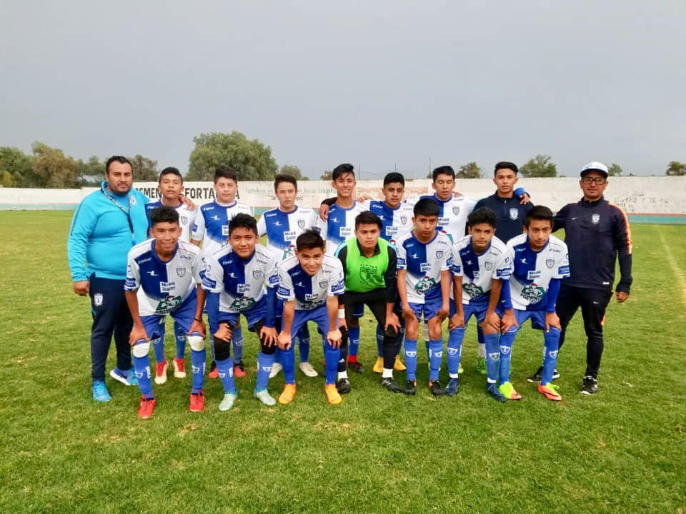
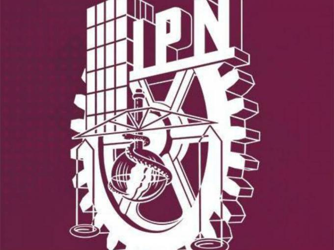
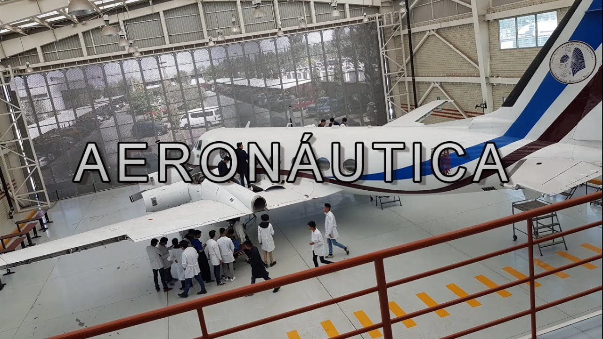
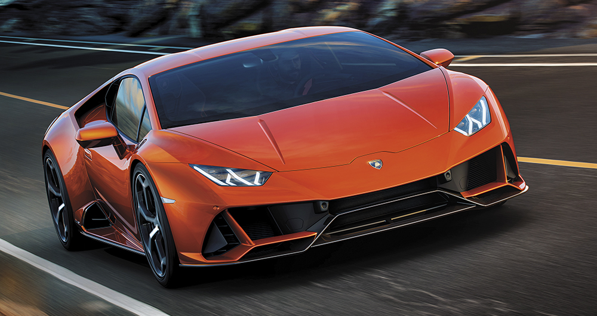

Mis aspiraciones y proyectos
Mi nombre es Eduardo Chavez Martin, soy un chico de 16 años que actualmente cursa la educacion media superior, y me va pues, decentemente, nada fuera de
lo comun, pero creo que puedo llegar muy lejos, lograr todo lo que quiero
e incluso mucho más, siempre me esfuerzo para ser mejor y mejorar en los
aspectos en los que estoy mal, siempre busco mejorar, puedo llegar a
hacer cosas muy grandes.
Meta a corto plazo
Una meta a corto plazo que tengo es jugar en unas fuerzas basicas, ya uqe ese siempre
ha sido mi sueño desde pequeño, ya que siempre soñe con ser un gran jugador de gutbol profesional y
en algun momento llegar a representar a la seleccion mexicana de futbol en la sub 20

Meta a mediano plazo
Actualmente estudio en el CECyT No.3 del Instituto Politecnico Nacional,
y por algo puse de opcion esta escuela y mi meta es graduarme del CECyT 3 con la cerrera de aeronautica,
ya que esuna carrera que me llamo la atencion y se me hizo una carrera un poco dicertida y me gustaria que
en mi trabajo yo haga algo que me guste y sea divertido y la aeronautica lo es

Mis aspiraciones
Yo aspiro primeramente a acabar mi carrera y titularme, actualmente quiero ser ingeniero en aeronautica
porque creo que es una carrea interesante, Yo no estoy estudiando para que al final mi esfuerzo no vaya
a ser reflejado en algo que no me hace feliz, ya que yo quiero que mi trabajo me guste

Mi proyecto
Mi proyecto que ahora estoy haciendo, es el de manejar jajaja , soy pesimo manejando pero vamos aprendiendo poco a poco
